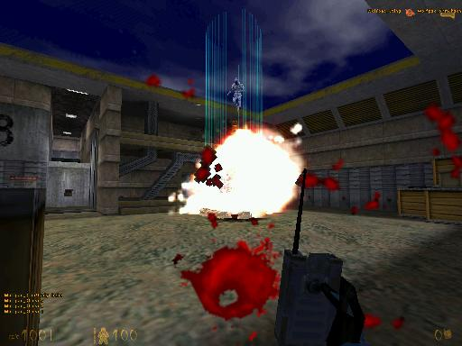
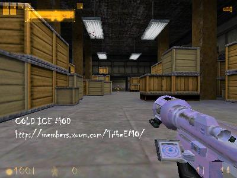

Main
News
Archives
Downloads
Cold
Ice MOD
Members
Allies
Links
Join
Us
POTWYou are Visitor #

|
| |
WOLFPAC
CLAN
Archives
WEEK
OF 29TH OF MAY
| 6/3/1999
7:55PM |
| I
have updated the weapons page on the Cold
Ice MOD link. Take a look at them. gauss.jpg
snark.jpg
|
| 6/3/1999
6:29PM |
| Hello!
Well today me and Sting tested out the
first beta of Cold Ice.. and He said it
rocked the house. :) This MOD is about
30% completed and will be released in
about 15 days or so. Hey I
got a funny pic here!
Check out that woman at the top.
Man
this pic really cracks me up!
|
| 6/2/1999
9:25PM |
| On
a very quick note... I've moved this site
to a more suitable name domain for this
page. TribeEMO didnt fit the picture...
But Wolfpac_Clan fits nicely :) |
| 6/2/1999
7:41PM |
| Hey,
I just got finished with a .avi movie of
a RGP rocket Launcher. Now you can
actually see the Damned new Launcher with
new skin in action. (But you cant hear
the new sound :) Cold
RPG.zip
Oh
and JailBreak for Half - life has been
Released. I got it posted for ya at the
downloads page. JailBreak MOD
By
the way, the link to download Jailbreak
is 50X's faster than Planet Half - Lifes
FTP Mirror system.
|
| 6/2/1999
5:08PM |
| Hello
all. Today I've finished posting up the
current sound fx files on the SoundFX page in the
MOD section. Please take a look and
listen. The
soundfx and models and coming out really
good. Today I will be starting the base
models of the items and other sorts of
goodies.
Oh,
You got to check out this wav.. Its funny
as hell. Hehe, The rocket lets go and...
(A hindu?) says "Ass kickin' will
now begin". Get it here
In
other news, Practice for Wolfpac will be
held on Saturday @ 11:00am and we will be
playing TFC. (Not my personal Favorite.).
The practice will be held on Stings
server as usual.
One
last thing. On Friday is my Brithday!
Yeah! 16..I just wanted to inform all of
ya here. :-)
|
| 6/1/1999
4:25PM |
| As
of today, I will be working on the new
Cold .html page with weapons section,
soundfx section and items section. Check
it out here.
Oh
and the MOD...I'm currently working with Bent
Wookie who
has been helping me with the source
coding.
Hey
anyone know where you can get a C++
compiler?
|
| 5/31/1999
6:07PM |
| I've
have just finished the readme. Take a
look.
===================================================
Cold Ice
v 1.0
http://members.xoom.com/TribeEMO/
5/31/99
Cold Ice only runs on version 1010 of
half-life or newer.
===================================================
---Description---
Cold Ice is a MOD that changes the
appearance of all of the .mdl files into
a negative format. Thus leading to a
white, blue and pink appearance. Cold ice
also changes some the of .wav files for a
new and fresh sound to most of the
weapons. Where have some of these sounds
come from? Rainbow Six, Quake 2 and other
Wav files not used, but included in the
half-life .pak file. It's surprising how
many .wav files were not used in the
final version of Half-life. Also, some
were mixed using Microsoft's recorder
program and Creative Wave Studio 4.02.
This MOD will have no updates or patches
because there will be no c++ programming
involed. Only the ice.dll will be the
only programming involed. This is so
because if you don't have the ice.dll
included with the .pak file, you can not
join a Cold Ice server. This MOD is based
independently on the .pak file where all
based files run on Cold Ice. It may have
one update or two but will not be worked
on constantly. Frankly, I didn't intend
to make a MOD but because of fooling
around with a .mdl viewer, I've decided
to develop this MOD. This MOD is only
made for the enjoyment of seeing a fresh
new look and sound to the awesome game of
Half-life.
-Thanks Valve for blessing us. :-)
=================================================
Programs Used.
============
MDL Viewer version 2.1
Creative Wave Studio 4.02
Paint Shop Pro 5.0
Sprite Wizard by Wavelength
Sprite Viewer .5
Microsoft Vis 6.0
Valves SDK
================================================
Please contact us with ideas, bug
reports, or general fan mail;-)
Questions? Comments?
Wolfpac_SlimShady - Head Programmer,
Webpage Design
darcuri@optonline.net
ICQ# 27868131
Wolfpac_Sting - Founder of Wolfpac
Sting1313@hotmail.com
ICQ# 31008941
=================================================================
Hey, If it wasn't for Clan Wolfpac. This
MOD would of never of happened.
=================================================================
First Beta will be out soon.
---{Wolfpac_SlimShady}---
Clan Wolfpac hopes you enjoy Cold Ice!
|
| 5/31/1999
1:17PM |
| Currently
Working on the new sounds for the Cold
Ice MOD. As of now, this MOD is looking
great. This MOD will NOT be a server
sided MOD.. You will have to need the
cl_dll and the pak file (Which is,
basically the whole MOD in one) in order
to join a ice mod server. This MOD mixes
up alot of the wavs, addes new skins to
the models and other surprizes inbetween. Check
the MOD html for more screenshots.
|
| 5/30/1999
8:20PM |
As
of 5 minutes ago, I 've finished up the
sounds of the mp5 and the singleshot and
doubleshot shotgun blast. Let me tell you
something. They Sound GOOD! :-) You can
grab them here.
hk1.wav
sbarrel1.wav
dbarrel1.wav |
| 5/30/1999
12:29PM |
| Hello.
As of now....Im going to be working on a
new MOD for Half life called "Cold
Ice"
-Features-
-All weapons and items reskinned in a
"Cold" color =)
-Different HUD display.
-Different Sounds of Weapons
-a ICE player model. (Piece o cake)
-and more to come.
(first beta in about a week)
Also, I dont intend to fool around with
any of the coding, cause it gives me a
headache. I will just use the original
enigine. This mod is for Looks
only. :)
Here
is an ingame pic.
|
| 5/29/1999
10:54AM |
| Currently
Working on New look. The old look was
getting out of hand with those god damned
tables :-) |
| © 1999
Wolfpac_SlimShady. All Rights Reserved. |
|
|
{kind=link}
{kind=link}